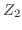
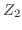

Just as with electromagnetic phenomena, when an acoustic plane wave meets a perpendicular planar change in impedance (e.g., a resistor, or in the case of light, a mirror), there is a component, , of the incident wave's stress, , that reflects back the way it came, and a component, , that transmits across the interface, continuing in the direction, , had been going. For acoustic waves meeting the interface obliquely, the story is much more complicated. These interactions differ considerably from the interactions exhibited by light at a specular interface, or electronic signals traveling down a transmission line. We will briefly explore the phenomena related to oblique acoustic reflection in section 1.5. Presently, we concern ourselves with the 1 dimensional case of acoustic impedance boundaries, which, when defined in terms of the stress, is very closely matched to the electromagnetic case, and much simpler than the general acoustic case.
In contrast to the specific impedance, which is an intrinsic property of the material in a resting state, the characteristic impedance, , is defined for a material through which a wave propagates. Characteristic impedance is depends on the wave propagating through the medium. For a forward-propagating plane wave with stress vector , particle velocity , and phase velocity , traveling through a material of unstressed density  , the characteristic impedance is defined as
, the characteristic impedance is defined as
To develop the equations that determine the effect of characteristic impedance changes on wave propagation, consider a harmonic, longitudinal, plane wave, traveling in the direction through a material of characteristic impedance , toward an infinitely long interface with a second material of characteristic impedance . At this interface, the values for the waves related to the stress,  , and particle velocity, , must be continuous. These boundary conditions must be obeyed at all times. Therefore, to find the coefficients of reflection and transmission, we first attend to the left side of the interface, summing the contributions from the incident and reflected waves. We try, [18, p. 10]
, and particle velocity, , must be continuous. These boundary conditions must be obeyed at all times. Therefore, to find the coefficients of reflection and transmission, we first attend to the left side of the interface, summing the contributions from the incident and reflected waves. We try, [18, p. 10]
These are the two stress and particular velocity waves, traveling toward, and reflected from, the interface.
The wave number  , and thus wavelength
, and thus wavelength  , is dependent on the characteristic impedance of the medium. Also notice in the above notation, we are not describing as a tensor, but as a wave in the
, is dependent on the characteristic impedance of the medium. Also notice in the above notation, we are not describing as a tensor, but as a wave in the  direction. In the entirety of this example, the
direction. In the entirety of this example, the  directionality of the stress and particle velocity waves is assumed. Continuing the convention established in equations (1.4.1) and (1.4.2), the stresses & and particle velocities & , each correspond to parameters of the forward- and backward- propagating waves. We are now prepared to define the reflection coefficient :
directionality of the stress and particle velocity waves is assumed. Continuing the convention established in equations (1.4.1) and (1.4.2), the stresses & and particle velocities & , each correspond to parameters of the forward- and backward- propagating waves. We are now prepared to define the reflection coefficient :
Meanwhile, to the right of the interface, a single transmitted wave propagates in the direction:

Because this interface's boundary conditions require the stress and velocity to be continuous at the interface, we can rewrite the formula for the reflection coefficient in terms of the two characteristic impedances:
 and impedance . However, other than these somewhat minor distinctions, as long as the plane wave's propagation vector is normal to an interface (alternatively, when the angle-of-incidence, ), this simple behavior is observed.[18, pp. 9-14]
and impedance . However, other than these somewhat minor distinctions, as long as the plane wave's propagation vector is normal to an interface (alternatively, when the angle-of-incidence, ), this simple behavior is observed.[18, pp. 9-14]
We can now test this model by demonstrating the effect of versus on the reflection and transmission of waves incident on a free boundary, i.e., when . Consider a rod extending in the direction all the way to . At , this rod ends, and the boundary is completely free. This rod's width,  , and height,
, and height,  , are small compared to the wavelengths of interest. Thus, wave propagation in this rod is restricted to a single dimension: its length. At the boundary, vibrations in this rod exhibit perfect lossless reflection. Incidentally, reverting to a single dimension also permits us to talk about force , rather than stress , which assumes an area. The interface is the outer surface of the object, so , and therefore
. Using (1.4.5), we predict that the left side of the interface should have inverted stress waves traveling in opposite directions. Furthermore, again plugging into our formula (1.4.5), the model tells us
that the left side of the interface should have non-inverted particle velocity waves, again traveling in opposite directions.
, are small compared to the wavelengths of interest. Thus, wave propagation in this rod is restricted to a single dimension: its length. At the boundary, vibrations in this rod exhibit perfect lossless reflection. Incidentally, reverting to a single dimension also permits us to talk about force , rather than stress , which assumes an area. The interface is the outer surface of the object, so , and therefore
. Using (1.4.5), we predict that the left side of the interface should have inverted stress waves traveling in opposite directions. Furthermore, again plugging into our formula (1.4.5), the model tells us
that the left side of the interface should have non-inverted particle velocity waves, again traveling in opposite directions.
The boundary conditions, which must be satisfied at all times, are
The rod is excited with a longitudinal sinusoidal wave-train: a wave that lasts long enough to be considered infinite. The function that describes this wave is . Since the wave is infinitely long, we don't have to worry about where the wave ``starts:'' it has no begining or end. Since we assume the system does not produce new frequencies, this wave can be represented as a phasor, which means we will only write the terms inside the exponent. Thus, this wave can be written in terms of its force like so:
| (1.4.6) |
The above scenario seems innocuous enough. However, the boundary conditions have already been violated. At , the force is a sinusoid (like it is everywhere), whose amplitude is not zero at all times. To satisfy the boundary conditions in (1.4.9), we introduce a second wave-train, identical in all senses except for its propagation direction,
| (1.4.7) |
| (1.4.8) |
| (1.4.9) |
which is consistent with our model's prediction above, in which the reflected force wave is inverted at a free end. [7, p. 116]
An interesting property here is that these two wave-trains would sum together such that, at all points, their phases would remain constant. Thus, the stress and velocity components of the disturbance would have phase velocities of zero, and the phenomenon that was once a traveling wave would no longer appear to be traveling at all: it would produce a standing wave. There would be points along the rod where the magnitude of the wave is always at a minimum (equilibrium). These points, which expand into lines when we talk about a two-dimensional surface, are called nodes. Conversely, there will be other points along which the wave reaches a maximum once every time cycle. These regions are called anti-nodes.
Since the left boundary is at , this rod does not impart any particular restrictions on what wavelengths will satisfy the boundary conditions. As a result, we have to continue putting energy into it in order to see any of this behavior. [7, p.319] But what would happen if we gave the rod a finite length? So long as the relationship between the distance these waves travel and their fluctuation in time remains fixed (see equation (1.2.2)), we can imagine that a given amount of distance, with a given set of boundary conditions, would only allow for certain frequencies of wave phenomena to be reinforced in this way. We will return to this concept when we begin to talk about the vibratory state of an object, in section 1.6.
A soft barrier could be modeled as an interface with a material of characteristic impedance , still smaller than the initial impedance , but this time, . In this case, when the incident and reflected waves superpose, their wave velocities will not completely cancel, because the reflected wave will only be partially reflected. Thus there will be a traveling component and a standing component apparent within the rod, and only a traveling component on the outside. The traveling component--and therefore, the net energy--will propagate in the direction of the incident wave, with an amplitude equal to their difference. The resulting wave behavior within an object is sometimes referred to as a partial standing wave. [15, p. 275]